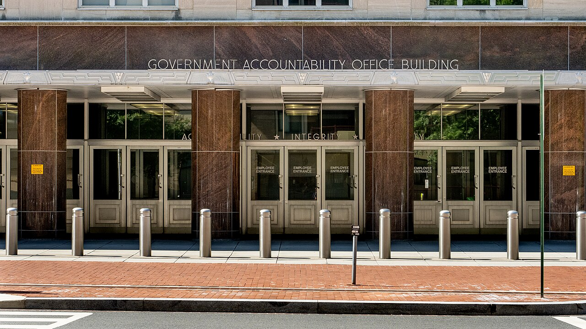

GRIEVANCE XIV ◆ PUBLIC TRUST
He has removed independent watchers charged to expose waste, misconduct, and abuse.
THE RECORD SHOWS
The administration dismissed approximately 17 inspectors general shortly after taking office, prompting challenges to the lack of statutory notice and concerns about oversight.

Inspectors general investigate fraud, waste, and misconduct across federal agencies. The administration carried out mass removals in January 2025, and former watchdogs subsequently sued. The disputes concern the legality of the removal process and the loss of independent scrutiny.
A DOCUMENTED SEQUENCE
3 MILESTONES- January 24, 2025At least 17 inspectors general across federal agencies were abruptly removed.
- February 2025Eight former inspectors general sued over the failure to give Congress advance notification and reasons.
- September 2025A federal judge found the dismissals unlawful on notice grounds but declined to return the plaintiffs to office.